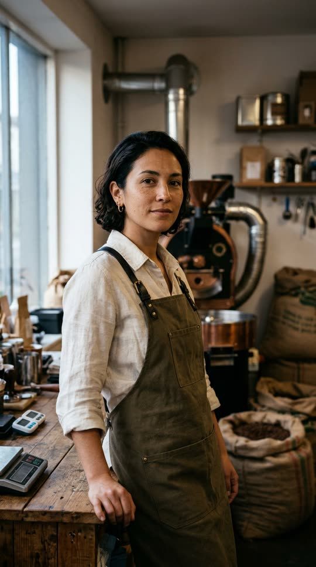
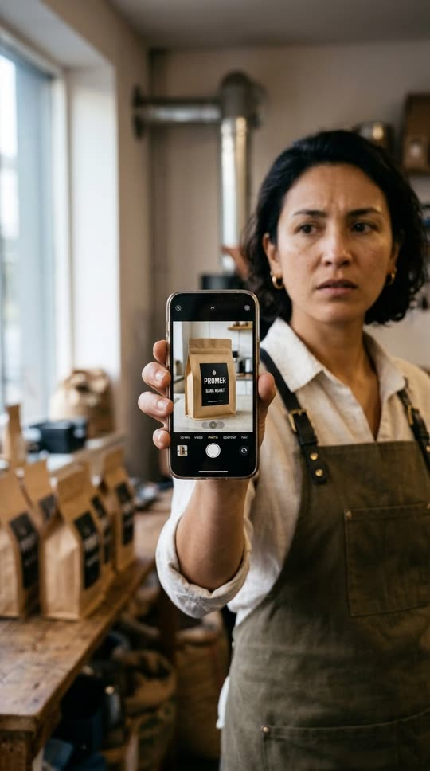
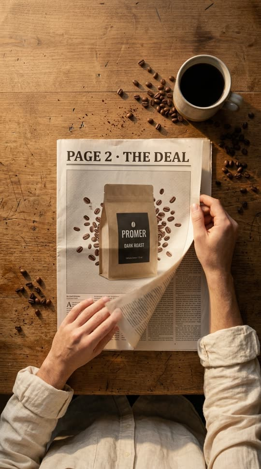
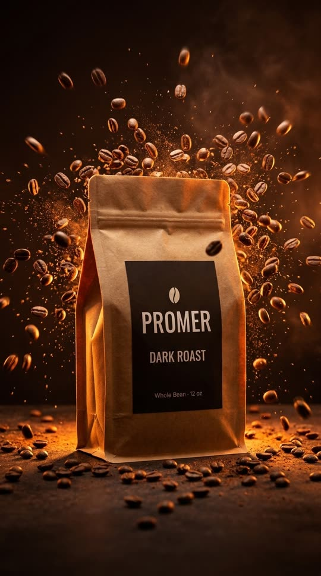
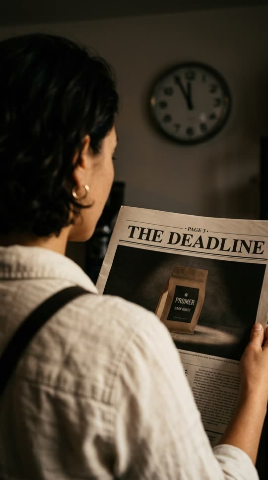
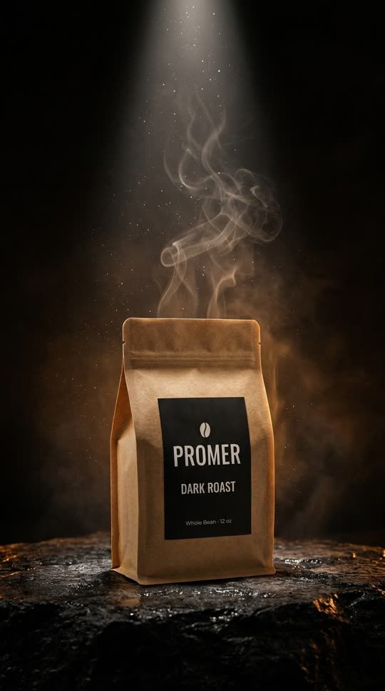
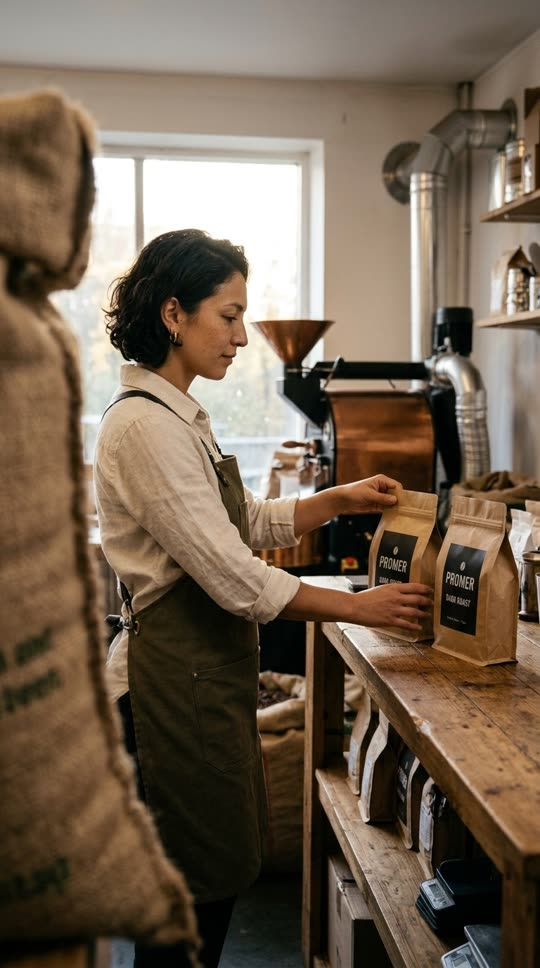
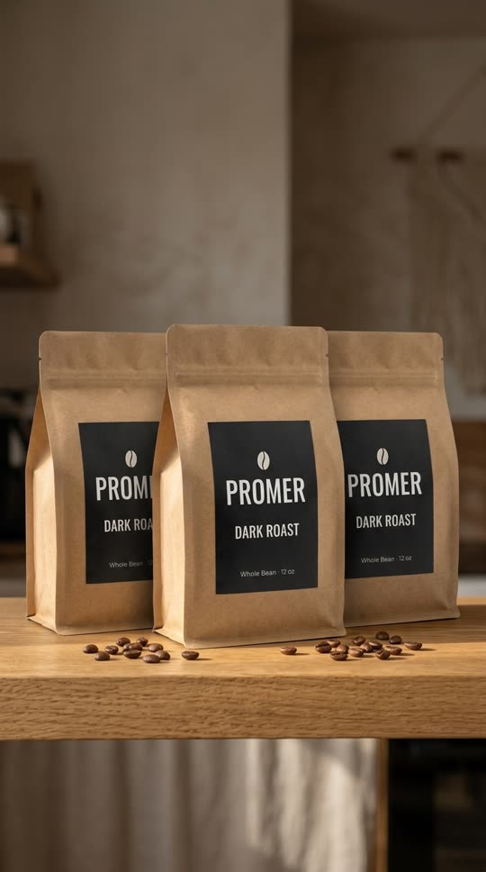
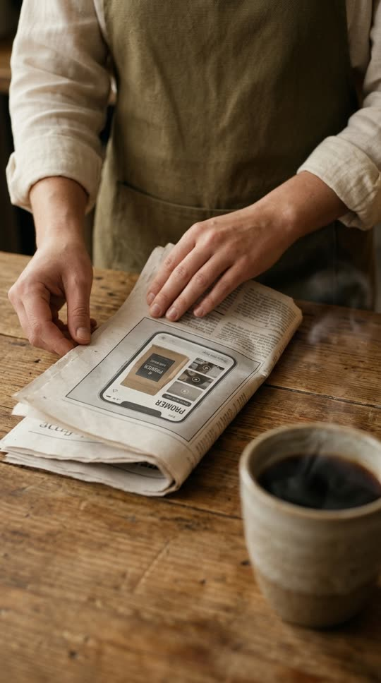
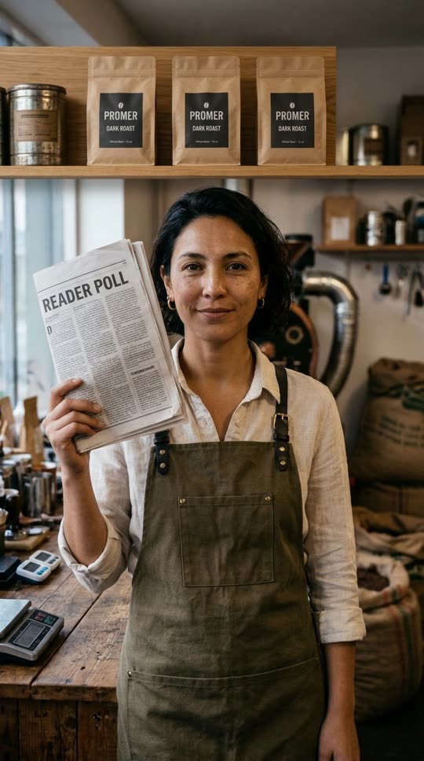

Shorts 03 · bước 3 Storyboard · bản 1 · 29/10/2026 · anh bảo dựng 30/10 (đang dựng trong AE)
The Seller Times: Black Friday cho shop cà phê
Một buổi sáng ở xưởng rang: chủ shop mở tờ báo và đọc tít "Black Friday: your ads aren't ready". Mỗi lần lật trang là một việc của quảng cáo Black Friday (giá · hạn chót · combo), và mỗi trang bung ra thành một video Promer thật làm từ một tấm ảnh chụp điện thoại.
Dài: khoảng 26 giâyKhung: 1080×1920, 30 fpsNhạc: ZISO · HELL FM, 120 bpmGiọng: Emma, phụ đề cứngMở: hỏi nỗi lo trước
Nhân vật

Chủ một xưởng rang cà phê nhỏ, bán trên Shopify: đầu 30, tóc ngắn xoăn sẫm, khuyên vàng nhỏ, sơ mi linen màu kem xắn tay, tạp dề vải canvas olive quai da.
Vai: người xem nhìn thấy chính mình (chủ shop nhỏ, tự làm mọi việc)
Diễn: lo (SC01–02) → tò mò (SC03–05) → tự tin, nhìn thẳng máy (SC07)
Dùng đúng một gương mặt cho mọi cảnh (ảnh này làm tham chiếu)
Ảnh trái: ảnh gốc nền trắng, khoá thiết kế túi cho mọi cảnh
Ảnh phải: tấm ảnh duy nhất của chủ shop, chụp điện thoại trên bếp. Đây là đầu vào đưa vào Promer AI Ad Animation
Nhịp nhạc và mốc cắt
Đo bằng máy trên file HELL FM (lọc dưới 150 Hz, mỗi 10 ms):
tempo 120 bpm (mỗi nhịp 0,50 giây, mỗi ô nhịp 2 giây); nhạc dâng ở 8,09 · 16,09 · 24,09 giây. Mọi nhát cắt rơi đúng nhịp. Anh nghe thử xem mood bài có hợp buổi sáng xưởng cà phê không.
SC01
SC02
SC03
Ad 1
Ad 2
Ad 3
SC06
SC07
03,096,09DROP 8,0911,0915,0916,0919,0924,09
Cảnh nhân vật (tạo bằng GodTools)Video Promer thật (Ad Animation)UI Promer dựng lại trong AE
Từng cảnh
Khung nét đứt là vùng an toàn Shorts (x 76–885, y 250–1440). Phụ đề luôn ở cùng một ô ngay trên mép dưới vùng an toàn; chữ nhấn màu tím sáng. Thông số máy dùng để viết prompt cho GodTools và ý tưởng "Add my idea" trong Promer, và để giữ một ngôn ngữ hình cho cả video. 30 fps nên màn trập chuẩn là 1/60 (góc 180°); chỉ đổi khi cần đóng băng hay kéo nhoè chuyển động.
For Shopify sellers
Shopify sellers, Black Friday ads not ready?
0,00–3,09AI-generated
SC01_Hook_ClaudeTờ báo đập xuống quầyGodTools
Cỡ cảnh · góc máy
Insert (cận vật), góc thấp ngang mặt quầy
Bố cục
Tít báo nằm 1/3 trên, ảnh túi trên báo ở giữa; đường mép quầy chéo dẫn mắt vào tít
Tiền cảnh
Miệng ly cà phê bốc khói, nhoè mạnh, mép trái
Trung cảnh
Tờ báo THE SELLER TIMES, tít "BLACK FRIDAY: YOUR ADS AREN'T READY" (nét)
Hậu cảnh
Chủ shop đứng sau quầy, khung cắt ngang cằm, nhoè; máy rang đồng phát sáng
Máy
35mmf/21/60đứng yên → push-in 4%
Ánh sáng
Nắng sớm qua cửa sổ bên trái, ấm (khoảng 3.800K)
Diễn biến
0,0 báo đập xuống (rung khung 3 khung hình + tiếng giấy) · 1,5 ảnh túi trên báo cử động (video Promer chạy trong khung ảnh): trước/sau trong 2 giây đầu
Lời đọc
"Shopify sellers, Black Friday ads not ready?" Merchant Shopify, quảng cáo Black Friday chưa xong?

Skip the reshoot. Give one photo three jobs.
3,09–6,09AI-generated
SC02_OnePhoto_ClaudeTấm ảnh duy nhấtGodTools
Cỡ cảnh · góc máy
Cận trung (MCU), ngang tầm mắt
Bố cục
Chủ shop ở 1/3 phải, điện thoại ở 1/3 trái; khoảng nhìn hướng vào khung
Tiền cảnh
Màn hình điện thoại: ảnh túi cà phê chụp trên bếp (nét sau khi rack focus)
Trung cảnh
Gương mặt lo lắng của chủ shop
Hậu cảnh
Kệ túi cà phê, bao tải đay, cửa sổ, bokeh ấm
Máy
85mmf/1.81/60rack focus mặt → điện thoại ở 4,5 giây
Ánh sáng
Ánh cửa sổ mềm bên trái, màn hình hắt sáng nhẹ lên tay
Diễn biến
Hạ tờ báo, giơ điện thoại lên. Chuyển sang SC03: tay hạ điện thoại xuống mặt báo (match cut theo chiều đi xuống)
Lời đọc
"Skip the reshoot. Give one photo three jobs." Khỏi chụp lại. Giao cho một tấm ảnh ba việc.

6,09–8,09AI-generated
SC03_Deal_Claude · phần 1Lật trang: The DealGodTools
Cỡ cảnh · góc máy
Nhìn thẳng từ trên xuống (top-down), cận trung
Bố cục
Tờ báo đặt lệch trái, ly cà phê góc trên phải cân khung; tay vào từ mép dưới
Tiền cảnh
Hai bàn tay, mép trang đang cong khi lật (nhoè chuyển động nhẹ)
Trung cảnh
Trang "PAGE 2 · THE DEAL" có ảnh túi và hạt cà phê bung
Hậu cảnh
Mặt gỗ quầy, hạt rang rải, ly cà phê đen
Máy
28mmf/5.61/60push-in nhanh dần vào khung ảnh
Diễn biến
Trang lật đúng nhịp 7,09; máy lao vào ảnh trên trang, ảnh phủ kín khung đúng 8,09 (drop) = sang Ad 1. Chuyển cảnh: zoom xuyên qua khung ảnh báo
Lời đọc
(nhạc dồn lên, không lời)

PAGE 2THE DEAL
Job one: sell the deal.
DROP 8,09–11,09minh hoạ
SC03_Deal_Claude · phần 2Ad 1 · The DealVideo Promer thật
Cỡ cảnh · góc máy
Cận sản phẩm, góc hơi thấp, túi chính giữa
Bố cục
Túi ở trục giữa, hạt bung toả tròn quanh túi; khoảng trống phía trên cho chữ trang báo
Tiền cảnh
Vài hạt bay sát ống kính, nhoè
Trung cảnh
Túi PROMER, nhãn nét
Hậu cảnh
Nền nâu espresso tối, viền sáng cam phía sau
Máy
100mm macrof/81/1000 đóng băng hạtpush-in chậm
Ý tưởng đưa vào Promer ("Add my idea")
Macro 100mm, f/8, 1/1000 shutter: roasted beans burst outward around the bag in slow motion, orange rim light, slow push-in. Keep the bag shape, black label and PROMER text unchanged. End on the bag centered, beans hanging mid-air.
Chữ AE trên hình
Đầu trang kiểu báo "PAGE 2 · THE DEAL" (serif đậm), không có giá thật trong video Promer
Lời đọc
"Job one: sell the deal." Việc một: bán cái giá.

11,09–12,09AI-generated
SC04_Deadline_Claude · phần 1Qua vai: The DeadlineGodTools
Cỡ cảnh · góc máy
Qua vai (OTS), hơi cao
Bố cục
Vai và tóc chiếm 1/3 trái, trang báo 1/3 phải, đồng hồ góc trên phải
Tiền cảnh
Vai, tóc xoăn, quai tạp dề (nhoè)
Trung cảnh
Trang "PAGE 3 · THE DEADLINE" với ảnh túi dưới đèn spot
Hậu cảnh
Đồng hồ treo tường chỉ 11:58 (mô-típ hạn chót), nhoè vừa đủ đọc
Máy
50mmf/2.81/60trượt nhẹ qua vai
Ánh sáng
Tối hơn SC03, ấm, tương phản cao: không khí gấp
Diễn biến
Kim giây nhảy 1 nấc đúng nhịp 11,59; cắt cứng sang Ad 2 ở 12,09

PAGE 3ENDS MONDAY
Job two: sell the deadline.
12,09–15,09minh hoạ
SC04_Deadline_Claude · phần 2Ad 2 · The DeadlineVideo Promer thật
Cỡ cảnh · góc máy
Toàn sản phẩm, góc thấp
Bố cục
Túi 1/3 dưới, cột sáng và hơi nóng kéo mắt lên phần trống phía trên (chỗ đặt chữ ENDS MONDAY)
Tiền cảnh
Mặt đá đen ướt, ánh hổ phách
Trung cảnh
Túi PROMER trong vũng sáng
Hậu cảnh
Phòng tối, hạt bụi trong cột sáng, hơi nóng cuộn
Máy
50mmf/21/60push-in chậm từ góc thấp
Ý tưởng đưa vào Promer
Dark room, 50mm f/2. A single spotlight clicks on above the bag, thin steam curls rise behind it, slow low-angle push-in. Keep the bag shape, black label and PROMER text unchanged. End on the bag in a pool of light with dark empty space above.
Lời đọc
"Job two: sell the deadline." Việc hai: bán hạn chót.

15,09–16,09AI-generated
SC05_Bundle_Claude · phần 1Xếp ba túi lên kệGodTools
Cỡ cảnh · góc máy
Toàn (wide), máy ngang ngực
Bố cục
Chủ shop 1/3 trái, hàng túi 1/3 phải; mép kệ dài làm đường dẫn ngang
Tiền cảnh
Mép bao tải đay bên trái, nhoè (che lộ dần khi máy trượt)
Trung cảnh
Chủ shop đặt túi thứ ba cạnh hai túi
Hậu cảnh
Cửa sổ sáng, máy rang đồng, nắng vàng sớm
Máy
24mmf/41/60trượt ngang phải (truck)
Diễn biến
Túi thứ ba chạm kệ đúng nhịp 16,09 (nhạc dâng lần 2) → match cut sang Ad 3 cùng hàng ba túi, cùng hướng máy

PAGE 4THE BUNDLE
Job three: sell the bundle.
16,09–19,09minh hoạ
SC05_Bundle_Claude · phần 2Ad 3 · The BundleVideo Promer thật
Cỡ cảnh · góc máy
Trung sản phẩm, ngang tầm kệ
Bố cục
Ba túi một hàng, túi giữa nhô lên trước; đối xứng
Tiền cảnh
Hạt cà phê rải trên mặt kệ
Trung cảnh
Ba túi PROMER giống hệt nhau
Hậu cảnh
Tường xưởng, bếp, nhoè
Máy
24mmf/41/60trượt phải, cùng hướng SC05
Ý tưởng đưa vào Promer
Three identical bags in a row on an oak shelf, 24mm f/4, camera trucks right while morning sunlight sweeps across them. Keep the bag shape, black label and PROMER text unchanged on all three. End on the middle bag slightly forward.
Rủi ro
Promer có thể không giữ đủ 3 túi giống nhau: tạo bản này sau cùng, lỗi thì báo anh trước khi tạo lại
Lời đọc
"Job three: sell the bundle." Việc ba: bán combo.

Promer AI · Ad Animation
All three made in Promer AI from that one photo.
19,09–22,09AI-generated
SC06_Classifieds_ClaudeMặt sau tờ báo: ô rao vặtGodToolsUI Promer dựng trong AE
Cỡ cảnh · góc máy
Cận, góc cao 45°
Bố cục
Tờ báo gập chéo khung; ô rao vặt nằm giữa; ly cà phê góc dưới phải cân khung
Tiền cảnh
Ly cà phê bốc hơi, nhoè
Trung cảnh
Mặt sau tờ báo, ô rao vặt là màn kết quả Promer Ad Animation (1 ảnh vào, 3 video ra)
Hậu cảnh
Tạp dề olive, nhoè
Máy
50mmf/2.81/60push-in vào ô rao vặt
UI
Dựng lại trong AE theo ảnh app thật (01_Brand/design-system/assets/product-screens/ad-animation/), nền xám sáng, chữ Inter; 3 ô video chạy đúng 3 bản Promer đã tạo. Không có cảnh gõ prompt
Lời đọc
"All three made in Promer AI from that one photo." Cả ba làm trong Promer AI từ đúng tấm ảnh đó.

Which one runs first?
1
2
3
Comment 1, 2 or 3
Promer AI
22,09–26,09AI-generated
SC07_Outro_ClaudeReader pollGodTools
Cỡ cảnh · góc máy
Trung (MS), ngang tầm mắt, nhìn thẳng máy
Bố cục
Đối xứng chính giữa: lần đầu nhân vật đứng giữa khung, khép chuyện
Tiền cảnh
Tờ báo gập trang "READER POLL" giơ cạnh mặt
Trung cảnh
Chủ shop cười nửa miệng, tự tin
Hậu cảnh
Kệ ba túi PROMER + máy rang, bokeh ấm (nhắc lại Ad 3)
Máy
35mmf/2.81/60đứng yên
Diễn biến
22,09 giơ báo · 24,09 (nhạc dâng lần 3) khung bình chọn bật lên: 3 ảnh nhỏ số 1, 2, 3, logo Promer AI. Related video: video dài Black Friday (L2) khi có
Lời đọc
"Which one runs first? Comment 1, 2, or 3." Bản nào chạy trước? Bình luận 1, 2 hoặc 3.
Ngôn ngữ hình cả video
Phần
Tiêu cự
Khẩu độ
Màn trập
Vì sao
Nhân vật mở (SC01–02)
35 → 85mm
f/2 → f/1.8
1/60
Từ khung kể chuyện sang cận mặt: đi dần vào nỗi lo; hậu cảnh nhoè để mắt chỉ đọc tít và tấm ảnh
Lật trang (SC03–05)
28 / 50 / 24mm
f/5.6 / f/2.8 / f/4
1/60
Mỗi lần lật một góc máy khác (trên xuống · qua vai · trượt ngang) để 3 việc không lặp hình
Video Promer (Ad 1–3)
100 / 50 / 24mm
f/8 / f/2 / f/4
1/1000 · 1/60 · 1/60
Deal đóng băng hạt (năng lượng) · Deadline tối và chậm (gấp) · Bundle sáng và rộng (nhiều)
Kết (SC06–07)
50 → 35mm
f/2.8
1/60
Lùi ra, nhân vật nhìn thẳng máy: hỏi người xem
Màu: ấm (gỗ, kraft, đồng) cho cảnh nhân vật; video Promer tối và tương phản hơn để nổi lên khi bung khỏi trang báo. Chữ báo dùng serif đậm; chữ Promer dùng Inter. Không camera 3D trong AE: chiều sâu nằm sẵn trong hình (luật dự án).
Làm ra hình thế nào
Phần
Công cụ
Ghi chú
Khung nhân vật (SC01–07)
GodTools: Nano Banana 2.1 cho khung đầu, rồi Veo 3.1 hoặc Seedance ảnh → video
Ảnh trên trang này là khung đầu đã tạo 29/10 (tham chiếu: ảnh nhân vật + ảnh túi). Chữ trên báo dựng lại trong AE cho sắc nét
Ad 1–3
Promer AI Ad Animation, đầu vào là ảnh chụp điện thoại, "Add my idea"
Ảnh trên trang chỉ minh hoạ; video thật tạo từng bản một, tắt tiếng. Khoảng 48 credit mỗi bản, cần khoảng 144, đang còn 47
UI Promer (SC06)
After Effects
Đối chiếu ảnh app thật, không quay màn hình
Giọng
ElevenLabs, Emma
48 chữ, khoảng 14–18 giây
Cần anh chốt
Nhân vật: giữ chủ xưởng rang này hay đổi người khác.
Nhạc HELL FM: anh nghe thử. Bài to ngay từ đầu (khoảng -5 dB), nên giọng phải nổi hơn nhạc ở 6 giây đầu.
Khung nhân vật cần cử động: tạo video bằng GodTools (Veo 3.1 hay Seedance). Em tạo thử SC01 trước để anh xem.
Credit Promer cho 3 video quảng cáo (cần khoảng 144, đang còn 47).
Bước 2 (2 idea) em gộp vào bản này theo lời anh "lên storyboard"; nếu anh muốn hướng thứ hai để so thì em làm thêm.